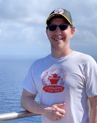

KEYNOTE SPEAKER - RICK KAZMAN

Rick Kazman is a Professor at the University of Hawaii and a Research Scientist at the Software Engineering Institute of Carnegie Mellon University. His primary research interests are software architecture, design and analysis tools, software visualization, and software engineering economics. Kazman has created several highly influential methods and tools for architecture analysis, including the SAAM (Software Architecture Analysis Method), the ATAM (Architecture Tradeoff Analysis Method), the CBAM (Cost-Benefit Analysis Method) and the Dali and Titan tools.
He is the author of over 200 publications, and co-author of several books, including Software Architecture in Practice, Designing Software Architectures: A Practical Approach, Evaluating Software Architectures: Methods and Case Studies, and Ultra-Large-Scale Systems: The Software Challenge of the Future. His research has been cited over 20,000 times, according to Google Scholar. Kazman received a B.A. (English/Music) and M.Math (Computer Science) from the University of Waterloo, an M.A. (English) from York University, and a Ph.D. (Computational Linguistics) from Carnegie Mellon University. How he ever became a software engineering researcher is anybody's guess. When not architecting or writing about architecture, Kazman may be found cycling, playing the piano, practicing Tae Kwon Do, or (more often) flying back and forth between Hawaii and Pittsburgh.
Presentation
Systems-of-Systems (SoS) have become increasingly complex and frequently used in highly distributed, dynamic, and even open environments. SoS refer to evolving software systems, where constituent systems (themselves systems in their own right) work cooperatively to fulfill specific, complex missions, facing software engineering researchers and practitioners with substantial challenges.
In parallel, Software Ecosystem (SECO) has also become an important research topic in software engineering, addressing social issues along with technical aspects of software development. SoS and SECO are closely related, also naturally distributed so as the distribution of development teams, along with the inherent difficulties of coordination and communication.
In this scenario, Distributed Software Development (DSD) deals with distributed resources to reduce cost and reach new IT markets. Inherent problems and challenges of software engineering are thus amplified and become more critical when those three topics need to be analyzed together.
This edition of SESoS/WDES 2019 will provide researchers and practitioners with a forum to exchange ideas and experiences, analyze research and development issues, discuss promising solutions, and propose theoretical foundations for development and evolution of complex systems, inspiring visions for the future of software engineering for SoS, SECO, and DSD and paving the way for a more structured community effort.
This workshop will be held in conjunction with the ICSE 2019, in Monteréal, Canada.